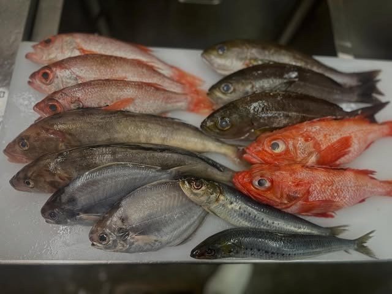
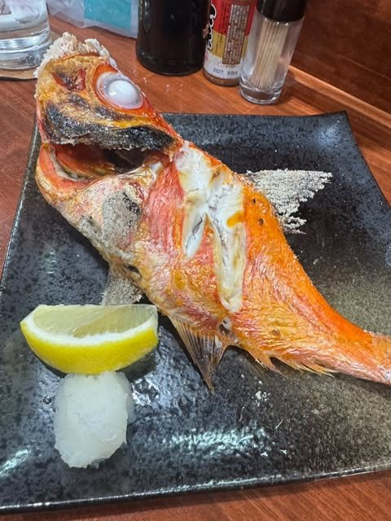
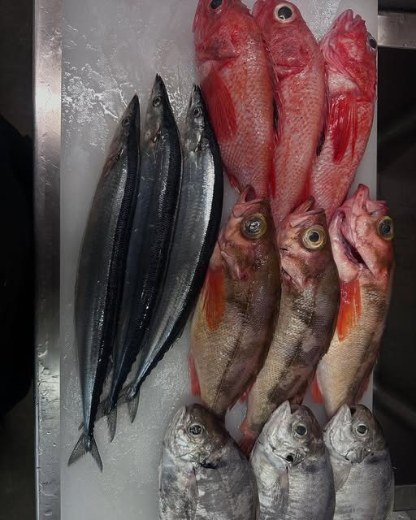
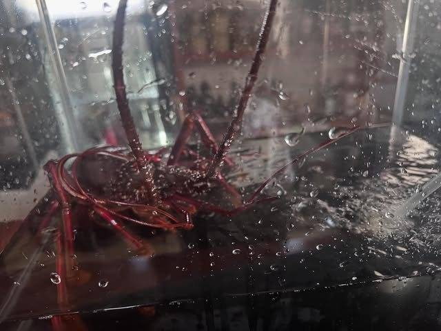
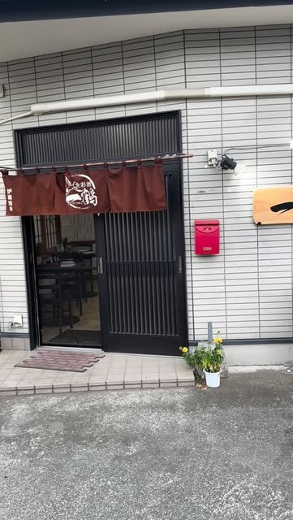
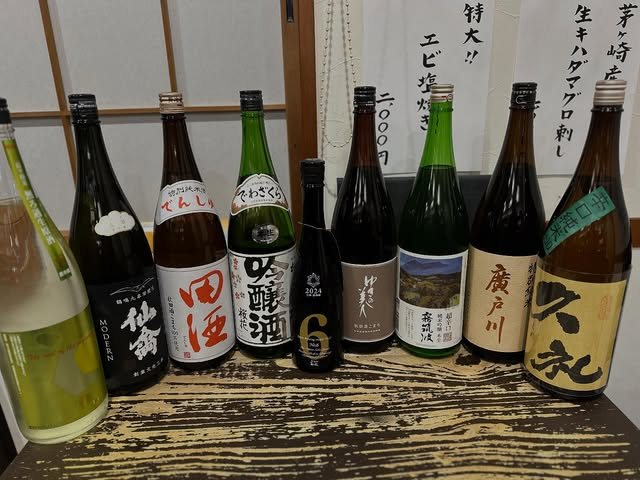
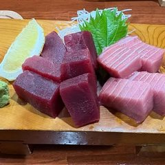
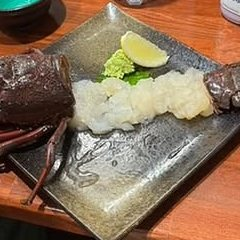

SAKANA
大間のまぐろと、旬の鮮魚
まぐろの最高峰・青森県大間産の本まぐろをはじめ、その日の良い魚を目利きで仕入れます。刺身はもちろん、煮付け・塩焼きまで、一尾を余さず味わい尽くせます。
KOGA / ROBATA & SAKANA
市場から仕入れる旬の魚を、目の前の炉端でじっくりと。
大間のまぐろ、香ばしい串、選りすぐりの地酒。
締めは店主こだわりの自家製ラーメン。
古河の夜に、肩ひじ張らない贅沢を。
営業時間 月〜土 17:00 − 24:00
定休日 日曜日 ※席数に限りがあるためご予約がおすすめです
アクセス JR古河駅東口 徒歩約8分／専用駐車場あり

まぐろの最高峰・青森県大間産の本まぐろをはじめ、その日の良い魚を目利きで仕入れます。刺身はもちろん、煮付け・塩焼きまで、一尾を余さず味わい尽くせます。

店の顔は炉端の焼き台。串打ちした魚や季節の野菜を、熾火でじっくりと焼き上げます。皮は香ばしく、身はふっくら。焼きたてをそのまま席へお届けします。


店主が惚れ込んだ全国の地酒を、その時々で入れ替えながらご用意。飲み比べで好みの一本を見つけるもよし、魚に合わせて選ぶもよし。山崎・白州・ラフロイグなど銘柄ウイスキーのハイボールも揃います。
仕入れにより内容は日々変わります。本日のおすすめは店内のお品書きにて。
「時価」「日替」の価格は、お気軽に店主へお尋ねください。

その日の魚を尾頭付きのまま炉端へ。皮は香ばしく、身はふっくら。
今日の焼魚 ¥1,000〜
まぐろの最高峰・青森県大間産。赤身から大とろまで塊で仕入れます。
入荷日限定・時価
店主特製の醤油・塩。季節にはカキラーメンなどの限定も。
¥900













| 店名 | 食彩酒 一鶴（しょくさいしゅ いっかく） |
|---|---|
| 住所 | 〒306-0013 茨城県古河市東本町2-16-8 Googleマップで開く ↗ |
| 電話 | 090-8192-0408 お席に限りがあります。ご予約がおすすめです。 |
| 営業時間 | 月〜土 17:00 − 24:00 |
| 定休日 | 日曜日 |
| アクセス | JR宇都宮線「古河駅」東口より徒歩約8分 専用駐車場あり（お車の方もどうぞ） |
| お席 | カウンター・テーブル・お座敷 |
| お支払い | 現金・各種クレジットカード |
本日の入荷やお休みのお知らせは、公式LINEとInstagramでご案内しています。
お席に限りがございます。ご来店の際はお電話でのご予約がおすすめです。
ご予約・お問い合わせ 090-8192-0408月〜土 17:00 − 24:00 ／ 日曜定休
仕込み・営業中はお電話に出られない場合がございます。その際は公式LINEもご利用ください。
 大間まぐろ刺し入荷日限定時価
大間まぐろ刺し入荷日限定時価 サバ¥900
サバ¥900 豚バラ¥500
豚バラ¥500